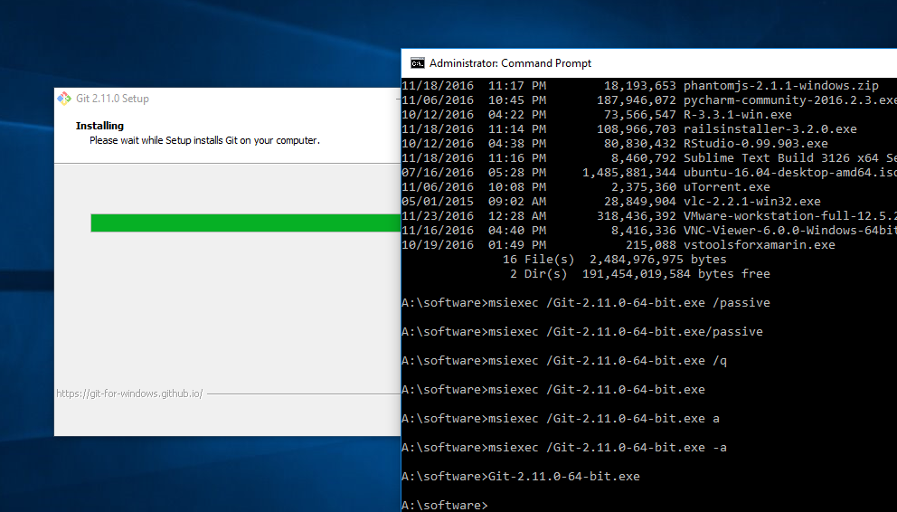
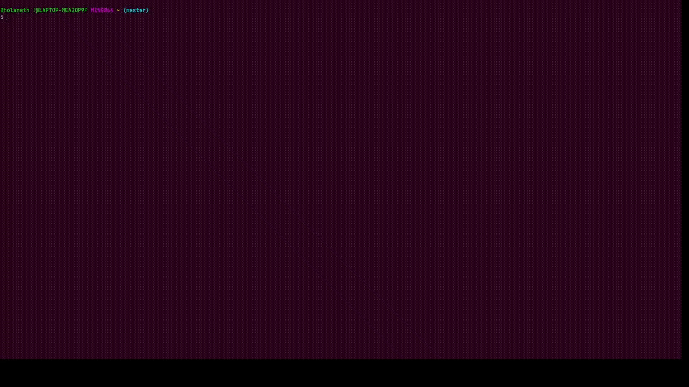
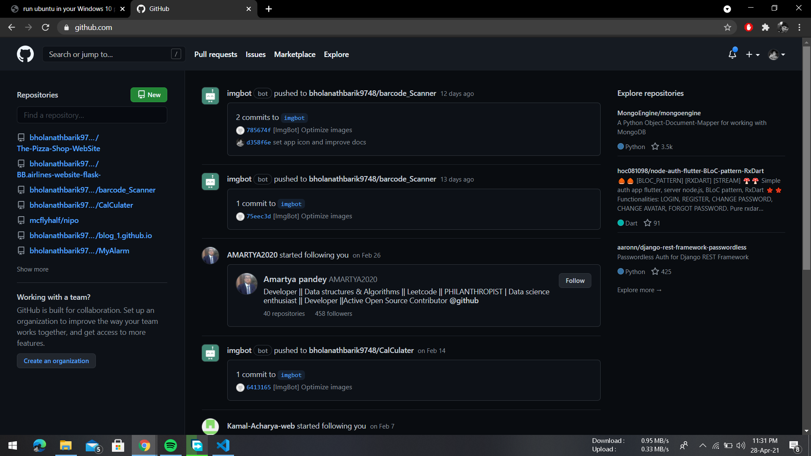
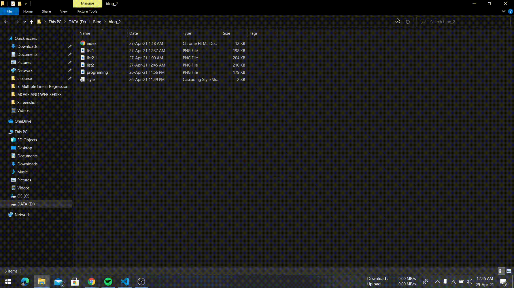
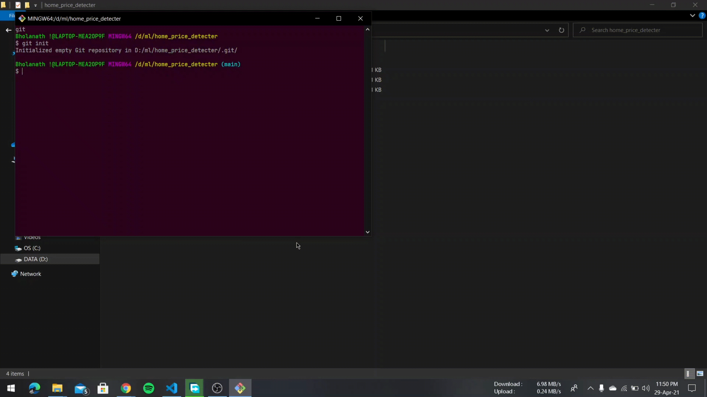
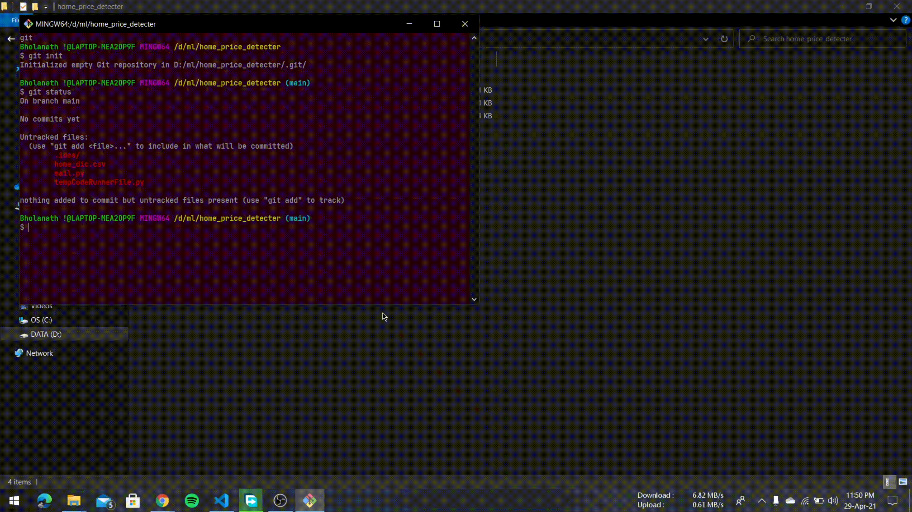
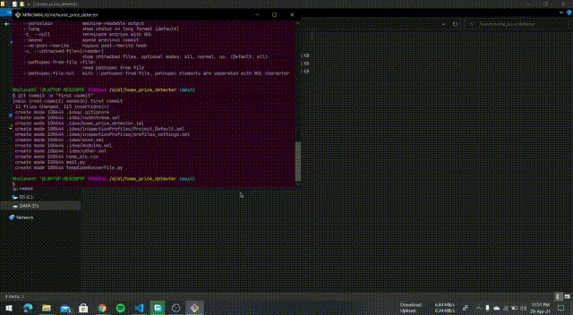

How to Upload Your First Codebase to GitHub
GitHub, Inc. is a provider of Internet hosting for software development and
version control using Git. It offers the distributed version control and source code management
functionality of Git, plus its own features.
Requirements
- not very Good internet connection to download git bash or upload code. (You can also use some other computer with an internet connection to download these files.)
- Windows system any rRAM.
- Windows system with at least 100 MB of free space.
Step 1: Download and install git Bash

Step 2: Install the git in default settings.

Step 3: After installing git, you need to set your name & e-mail address in the Git configuration. This information will be displayed every time you make a new commit.
Step 4: Type the below command to configure your name
git config--global user.name "Your Name Here"

Step 5: Similarly, you need to configure your email address by typing the command given below
git config--global user.email "Your email Here"
Step 6: Crete A github Account

Step 7: Now, head over to github.com and create a new repository in which you want to push your project.

Step 8: Now, right-click on the folder containing the codebase which you want to push to GitHub and select “Open git bash here.” I will be pushing an “index.html” file which is inside my Github Demo folder which you can see in the below animation.

Step 9: On clicking “Git bash here”, a new git bash terminal window will open!
Step 10: Now, initialize the local directory as a Git repository by typing:
git init

Step 10: check status
git status

Step 11: Now, you need to add the files to the staging area (git will only track the files inside this area). Run:
git add .

Step 12: The next step is to commit your staged files by typing
git commit -m "Type message of your choice here"

Step 13: Now, copy the link to the repository which you created in step 7 and push codes

p